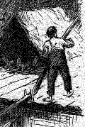

|
Mr. Aldrich has studied the life of A Bad Boy as the pleasant reprobate led it in a quiet old New England town twenty-five or thirty years ago, where in spite of the natural outlawry of boyhood he was more or less part of a settled order of things, and was hemmed in, to some measure, by the traditions of an established civilization. Mr. Clemens, on the contrary, has taken the boy of the Southwest for the hero of his new book, and has presented him with a fidelity to circumstance which loses no charm by being realistic in the highest degree, and which gives incomparably the best picture of life in that region as yet known to fiction. The town where Tom Sawyer was born and brought up is some such idle, shabby little Mississippi River town as Mr. Clemens has so well described in his piloting reminiscences, but Tom belongs to the better sort of people in it, and has been bred to fear God and dread the Sunday-school according to the strictest rite of the faiths that have characterized all the respectability of the West. His subjection in these respects does not so deeply affect his inherent tendencies but that he makes himself a beloved burden to the poor, tender-hearted old aunt who brings him up with his orphan brother and sister, and struggles vainly with his manifold sins, actual and imaginary. The limitations of his transgressions are nicely and artistically traced. He is mischievous, but not vicious; he is ready for almost any depredation that involves the danger and honor of adventure, but profanity he knows may provoke a thunderbolt upon the heart of the blasphemer, and he almost never swears; he resorts to any stratagem to keep out of school, but he is not a downright liar, except upon terms of after shame and remorse that make his falsehood bitter to him. He is cruel, as all children are, but chiefly because he is ignorant; he is not mean, but there are very definite bounds to his generosity; and his courage is the Indian sort, full of prudence and mindful of retreat as one of the conditions of prolonged hostilities. In a word, he is a boy, and merely and exactly an ordinary boy on the moral side. What makes him delightful to the reader is that on the imaginative side he is very much more, and though every boy has wild and fantastic dreams, this boy cannot rest till he has somehow realized them. Till he has actually run off with two other boys in the character of buccaneer, and lived for a week on an island in the Mississippi, he has lived in vain; and this passage is but the prelude to more thrilling adventures, in which he finds hidden treasures, traces the bandits to their cave, and is himself lost in its recesses. The local material and the incidents with which his career is worked up are excellent, and throughout there is scrupulous regard for the boy's point of view in reference to his surroundings and himself, which shows how rapidly Mr. Clemens has grown as an artist. We do not remember anything in which this propriety is violated, and its preservation adds immensely to the grown-up reader's satisfaction in the amusing and exciting story. There is a boy's love-affair, but it is never treated otherwise than as a boy's love-affair. When the half-breed has murdered the young doctor, Tom and his friend, Huckleberry Finn, are really, in their boyish terror and superstition, going to let the poor old town-drunkard be hanged for the crime, till the terror of that becomes unendurable. The story is a wonderful study of the boy-mind, which inhabits a world quite distinct from that in which he is bodily present with his elders, and in this lies its great charm and its universality, for boy-nature, however human nature varies, is the same everywhere. The tale is very dramatically wrought, and the subordinate characters are treated with the same graphic force that sets Tom alive before us. The worthless vagabond, Huck Finn, is entirely delightful throughout, and in his promised reform his identity is respected: he will lead a decent life in order that he may one day be thought worthy to become a member of that gang of robbers which Tom is to organize. Tom's aunt is excellent, with her kind heart's sorrow and secret pride in Tom; and so is his sister Mary, one of those good girls who are born to usefulness and charity and forbearance and unvarying rectitude. Many village people and local notables are introduced in well-conceived character; the whole little town lives in the reader's sense, with its religiousness, its lawlessness, its droll social distinctions, its civilization qualified by its slave-holding, and its traditions of the wilder West which has passed away. The picture will be instructive to those who have fancied the whole Southwest a sort of vast Pike County, and have not conceived of a sober and serious and orderly contrast to the sort of life that has come to represent the Southwest in literature. Mr. William M. Baker gives a notion of this in his stories, and Mr. Clemens has again enforced the fact here, in a book full of entertaining character, and of the greatest artistic sincerity. Tom Brown and Tom Bailey are, among boys in books, alone deserving to be named with Tom Sawyer. |
